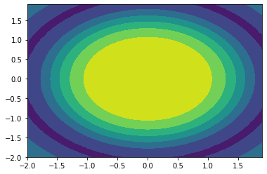

Numpy¶
import numpy as np
import matplotlib.pyplot as plt
from IPython.display import display, Math, Latex
1 np.array操作¶
1.1 - 生成数据、初始化¶
1.1.1 指定数据¶
"""
If the list contains all ints then the created array will also have a data type of int,
otherwise it will be float.
"""
np.array([1., 0, 0, 0, 0, 0])
array([1., 0., 0., 0., 0., 0.])
np.array(range(10))**2
array([ 0, 1, 4, 9, 16, 25, 36, 49, 64, 81])
# 对角矩阵
np.diag([500., 49.])
array([[500., 0.],
[ 0., 49.]])
1.1.2 随机数据¶
# 创建2行2列取值范围为[0,1)的数组
np.random.rand(2,2)
array([[0.40565084, 0.96110642],
[0.17262733, 0.35785805]])
# 创建2行3列，取值范围为标准正态分布的数组
np.random.randn(2,3)
array([[-1.26724422, -0.06001476, -0.16686296],
[-1.12466977, -0.97529199, 0.71501909]])
1.1.3 生成坐标¶
e.g. 生成二维坐标
row, col = np.indices((2, 3))
row, col
(array([[0, 0, 0],
[1, 1, 1]]),
array([[0, 1, 2],
[0, 1, 2]]))
print(np.ravel(row))
print(np.ravel(col))
[0 0 0 1 1 1]
[0 1 2 0 1 2]
e.g. 生成二维坐标
x = np.arange(-2, 2, 0.1)
y = np.arange(-2, 2, 0.1)
xv, yv = np.meshgrid(x, y)
xv, yv
(array([[-2. , -1.9, -1.8, ..., 1.7, 1.8, 1.9],
[-2. , -1.9, -1.8, ..., 1.7, 1.8, 1.9],
[-2. , -1.9, -1.8, ..., 1.7, 1.8, 1.9],
...,
[-2. , -1.9, -1.8, ..., 1.7, 1.8, 1.9],
[-2. , -1.9, -1.8, ..., 1.7, 1.8, 1.9],
[-2. , -1.9, -1.8, ..., 1.7, 1.8, 1.9]]),
array([[-2. , -2. , -2. , ..., -2. , -2. , -2. ],
[-1.9, -1.9, -1.9, ..., -1.9, -1.9, -1.9],
[-1.8, -1.8, -1.8, ..., -1.8, -1.8, -1.8],
...,
[ 1.7, 1.7, 1.7, ..., 1.7, 1.7, 1.7],
[ 1.8, 1.8, 1.8, ..., 1.8, 1.8, 1.8],
[ 1.9, 1.9, 1.9, ..., 1.9, 1.9, 1.9]]))
z = np.sin(xv**2 + yv**2) / (xv**2 + yv**2)
h = plt.contourf(x,y,z)
plt.show()

1.2 读取数据¶
1.2.1 任意多个位置¶
a = np.array(range(10))**2
a[[0, 2]]
array([0, 4])
1.2.2 Assign all rows/cols of a matrix to variables¶
a = np.array([[1,2,3],
[1,2,3]])
r1, r2 = a
r1, r2
(array([1, 2, 3]), array([1, 2, 3]))
c1, c2, c3 = a.transpose()
c1, c2, c3
(array([1, 1]), array([2, 2]), array([3, 3]))
1.3 克隆¶
克隆时候最好把dtype也一起带上
"""A = matplotlib.image.imread('pic.jpg')
注意此时A.dtype为uint8
"""
A = np.zeros((100, 100), dtype=np.uint8)
B = np.zeros_like(A)
"""numpy默认数据类型是float64
此时A和B的dtype不一样!!!
"""
B = np.zeros(A.shape)
print(A.dtype, "\=", B.dtype)
B1 = np.zeros(A.shape, dtype=A.dtype)
print(A.dtype, "=", B1.dtype)
uint8 \= float64
uint8 = uint8
1.4 运算¶
1.4.1 np.matmul(A,B)¶
请注意W.shape
W = np.arange(2)
X = np.arange(6).reshape(3, 2)
b = 1
res1 = np.matmul(W, X.T) + b
res2 = np.matmul(X, W) + b
print('X.shape:', X.shape, '\nW.shape:', W.shape)
display(Math("W*X^T = \\text{%s}"%(res1)))
display(Math("X*W = \\text{%s}"%(res2)))
X.shape: (3, 2)
W.shape: (2,)
\[\displaystyle W*X^T = \text{[2 4 6]}\]
\[\displaystyle X*W = \text{[2 4 6]}\]
1.5 添加或删除¶
1.5.1 Append to an array¶
a = np.array([1,2,3])
np.append(a, 3)
array([1, 2, 3, 3])
a = np.array([[1,2,3],
[2,3,4]])
b = np.array([[4],
[5]])
np.append(a, b, axis=1)
array([[1, 2, 3, 4],
[2, 3, 4, 5]])
1.5.2 Stack arrays¶
stack: Join a sequence of arrays along a new axis. (shape会增加一个维度)vstack: Stack arrays in sequence vertically (row wise).hstack: Stack arrays in sequence horizontally (column wise).
e.g. 1D arrays - stack
a = np.array([1, 2, 3])
b = np.array([2, 3, 4])
np.stack((a,b), axis=0)
array([[1, 2, 3],
[2, 3, 4]])
np.stack((a,b), axis=1)
array([[1, 2],
[2, 3],
[3, 4]])
e.g. 1D arrays - hstack and vstack
np.hstack((a,b))
array([1, 2, 3, 2, 3, 4])
np.vstack((a,b))
array([[1, 2, 3],
[2, 3, 4]])
e.g. 2D arrays - stack
a = np.array([[1,2,3],
[2,3,4]])
b = np.array([[1,2,3],
[2,3,4]])
np.stack((a,b), axis=0)
array([[[1, 2, 3],
[2, 3, 4]],
[[1, 2, 3],
[2, 3, 4]]])
np.stack((a,b), axis=1)
array([[[1, 2, 3],
[1, 2, 3]],
[[2, 3, 4],
[2, 3, 4]]])
np.stack((a,b), axis=2)
array([[[1, 1],
[2, 2],
[3, 3]],
[[2, 2],
[3, 3],
[4, 4]]])
e.g. 2D arrays - vstack and hstack
np.hstack((a,b))
array([[1, 2, 3, 1, 2, 3],
[2, 3, 4, 2, 3, 4]])
1.5.3 删除¶
a = [1,2,3,4]
a.pop(-1)
a
[1, 2, 3]
2 Misc¶
2.1 打印精度设置¶
参考：
此外，可以用np.set_printoptions()改变全局的设置
print('default:', np.array([2.0]) / 3)
with np.printoptions(precision=2):
print('precision=2:', np.array([2.0]) / 3)
default: [0.66666667]
precision=2: [0.67]
with np.printoptions(formatter={'float':'{:8.2f}'.format}):
print(np.array([12.2322, 2.2]))
[ 12.23 2.20]
a = np.array([1,2,3,1,1])
a[a==1] = 2
a
array([2, 2, 3, 2, 2])
2.2 np.arctan2() 弧度、角度计算¶
np.arctan()不可以计算分母为0(90°)的情况，所以最好用np.arctan2()
np.arctan2(-10, 0) * 180 / np.pi
-90.0